Clip Layer Effects¶
Clip Layer effects were introduced with T7. They offer quick offline rendering of many common audio processes but arranged as layers. You can add or remove layers at will and the effects are rendered in quickly. You can even rearrange the layers. Effects are applied from the top down through the layers.
You may find Clip Layer effects to be most useful for things like applying clip based volume automation, conversion to mono, and normalizing. However, those are just a few example of Clip Layer effects capabilities.

Example Clip Layers
To use Clip Layer effects, click on new FX icon in the header for any Audio clip.
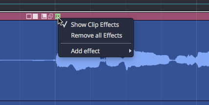
Audio Clip Header FX Menu
From there, select from any of effects. More details on each of these options follows.
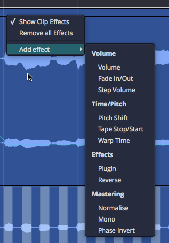
FX Menu Add Effect Options
The Clip Layer will appear. As you hover your mouse over it, a set of controls appears to the right. The following diagram illustrates the available options.

Clip Layer Controls Diagram
Volume - Volume¶
Adding a volume layer is the Waveform way to do clip based volume automation. You may find yourself using this instead of track automation when it comes to automating volume.
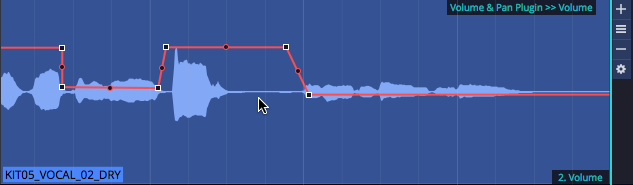
Volume Clip Layer
When you click the "gear" icon for a volume layer, you will see the Volume & Pan control values in properties.
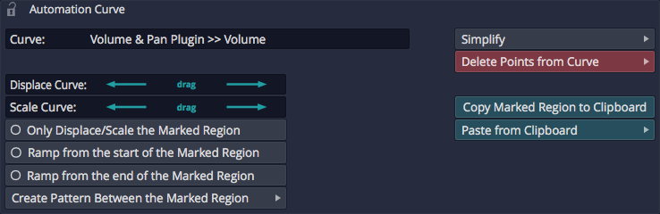
Volume Clip Layer properties
While somewhat useful, you are probably more interested in working with the volume automation curve itself. To do so, click on the volume curve (which initially shows up as a line) and then you have access to the properties for that.
💡 Tip: See Automation for more on editing the automation curve. Everything about editing automation curves for tracks applies to volume Clip Layers as well.
Volume - Fade¶
Fade-ins and fade-outs are also available as layers. After creating the fade layer, drag the left or right fade handles to create the fade in or fade out.
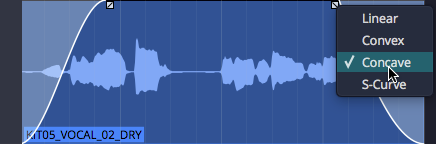
Fade In/Out
💡 Tip: Right click a fade handle to set the fade shape.
Volume - Step¶
Add a step volume layer to rhythmically gate the clip.
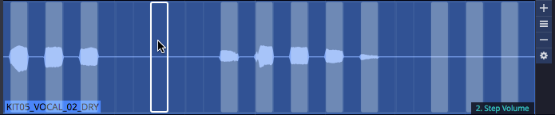
Step Volume Layer
With the step Clip Layer in place, click the gear icon at the right of the layer and then work with all the properties to set the step size and divisions. You can then click on the steps to turn them on or for unlimited synced gating options.
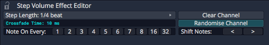
Step Volume properties
Time/Pitch - Pitch Shift¶
Add a pitch shift Clip Layer to get access to an automation curve for pitch. Add points and automate like any other effect to apply anything from simple pitch offsets to dramatic pitch sweeps.
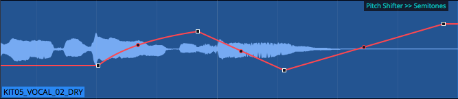
Pitch Shift Layer
When you select the pitch curve on the clip, its properties give you access to the normal range of controls for automation curves.
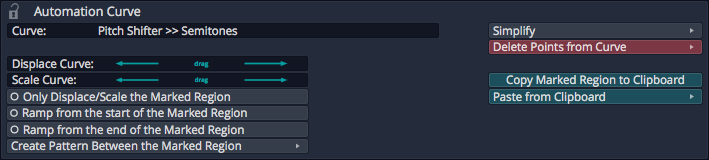
Pitch Curve properties
Time/Pitch - Tape Stop/Start (Pitch Fade)¶
You probably already know that you can right-click the fade handles on any Audio clip to apply pitch fades. Now you can do the same thing as a Clip Layer effect.
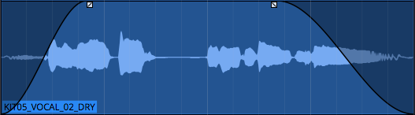
Tape Stop/Start Layer
Right-click the fade handle to choose the shape for the curve.
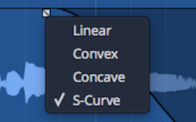
Tape Stop/Start Fade Options
Time/Pitch - Warp Time¶
Before Clip Layers, you had to enable Warp Time on the clip itself (from the Actions panel or the Detail editor). While that still works, it's much easier with the clip layers feature; just add a warp time Clip Layer.
The header area of the Clip Layer will appears shaded. Click anywhere in the shaded area to add a warp marker.
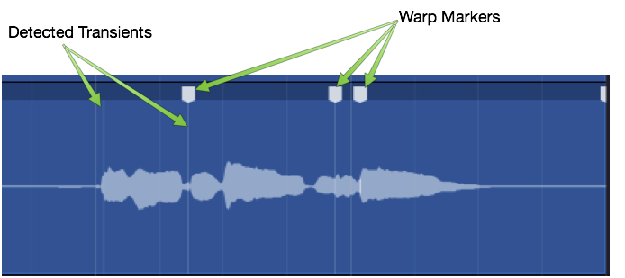
Warp Time Clip Layer - Click to Add Marker
Drag a warp points to time stetch audio between warp markers.
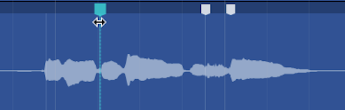
Drag to Warp
If you want to remove a warp marker, right-click and remove it or all markers.
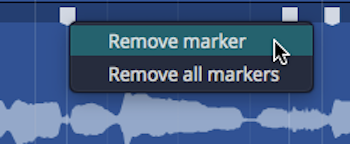
Right-click to Remove Warp Markers
You may find this implementation of Warp Time much more convenient, especially if you want to align transients to things happening on other tracks in the Edit. With the old way, you couldn't really see timing in relation to the rest of the Edit.
Effects - Plugin Layer¶
A plugin Clip Layer allows you to add any plugin including 3rd-party effects to a layer.
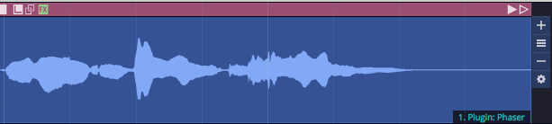
Plugin Layer
You will be prompted to select a plugin as you add the layer. The name of the plugin appears on the Clip Layer at the lower right when the layer is selected.
Here are the key things to know when working with the plugin Clip Layers:
- Click the gear icon at the right to open the plugin UI. When you tweak parameters, a few second later the change is rendered in.
📝 Note: Because of the way rendering works, it is a bit hard to audition changes to plugin parameters. You may find plugin Clip Layers are best for applying known presets. If you want to do a lot of real time tweaking, then you will probably be better off to use a Clip effect or normal track plugin.
- Click the A at the top right to show automation curves. Any exposed automation parameter can be selected which makes its curves visible. Use all your standard automation editing tools to draw in appropriate automation.
Effects - Reverse Clip Layer¶
Using the reverse Clip Layer is really easy. Add the layer and the audio within the clip will now play backwards.
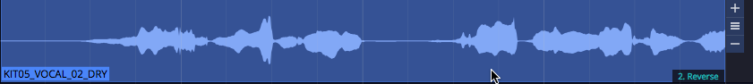
Reverse Layer
Mastering - Normalise Layer¶
Normalise adjusts the gain of audio so that it use all of the available the bit depth. The concept is analogous to "zoom-to-fit" in image editing software.
To use it, first add Normalize layer.

Normalise Layer
Then adjust the Normalize value to keep peaks where you want. In voiceover work, many customers request the audio to be normalized to -3db.
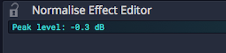
Normalise Property
Mastering - Mono Layer¶
To convert to mono, the mono Clip Layer is a greta feature. It is much more convenient to use this than other approaches in Waveform.
First add a mono Clip Layer:
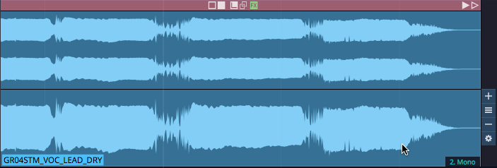
Mono Layer
The choose one of options for determine how to render to mono from stereo:
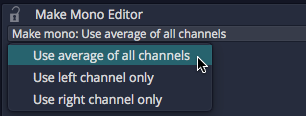
Mono Options
📝 Note: Most of the time you will probably select Average of all Channels. This mixes the left and right channels to to create a mono version.
Mastering - Phase Invert Layer¶
The phase invert Clip layer is pretty straightforward. It flips the polarity of the wave.
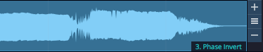
Phase Invert Layer
Moving On¶
We think you will enjoy exploring and working with Clip Layers. It is really only from experimenting with this approach that you will understand how it works. There are likely many new editing workflows that have yet to be discovered, that leverage the power of Clip Layers.